전파전자기능사(구) (2005-04-03 기출문제)
1과목: 임의 구분
1. 단측대파(SSB) 통신방식의 특징이 아닌 것은?
- 신호대 잡음비(S/N)가 향상된다.
- 양측파대 방식에 비하여 전력소비가 크다.
- 다중통신에 적합하다.
- 비트방해가 일어나지 않는다.
(정답률: 알수없음)

2. 방향탐지시 선박에서 발사된 전파가 해상에서는 등속도로 전파되나 육상에 가까워 질수록 속도가 늦어 생기는 오차를 무엇이라고 하는가?
- 야간 오차
- 해안선 오차
- 수직 오차
- 절대 오차
(정답률: 알수없음)
3. 송신기에서 안테나까지 사용되는 전송 선로를 무엇이라 하는가?
- 점퍼선
- 급전선
- 리드선
- 전력선
(정답률: 알수없음)
4. 정지 궤도 위성통신의 장점이 아닌 것은?
- 서비스지역이 넓다.
- 광대역 통신이 가능하다.
- 통신망 구축이 용이하다.
- 통신보안 장치가 필요하다.
(정답률: 알수없음)
5. 다음 중 위성의 궤도에 따른 분류가 아닌 것은?
- 저궤도(LEO)
- 중궤도(MEO)
- 고궤도(GEO)
- 중고궤도(HEO)
(정답률: 알수없음)
6. 송신 공중선으로부터 2[㎞] 지점에서 측정한 전계강도가 100[㎶/m]이라 한다. 5[㎞]의 거리에서 전계강도로 환산하면 몇[㎶/m]인가?
- 10[㎶/m]
- 20[㎶/m]
- 30[㎶/m]
- 40[㎶/m]
(정답률: 알수없음)
7. 수평면내 지향성이 없는 안테나는?
- 롬빅 안테나
- 제펠린 안테나
- 루프 안테나
- 브라운 안테나
(정답률: 알수없음)
8. 무선수신기에 있어서 전원전압의 변동에 영향이 가장 적은 것은?
- 이득
- 선택도
- 감도
- 안정도
(정답률: 알수없음)
9. 맥동률(ripple)이 2[%]인 전원설비의 직류분 전압이 100[V]이었다. 이 때 맥동분의 전압실효치는 몇 [V]인가?
- 2
- 5
- 50
- 200
(정답률: 알수없음)
10. 안테나의 복사저항을 Rr,손실저항을 Ra라 하면 안테나 효율은?
- Ra/Rr
- Rr/Ra
- Ra/Ra + Rr
- Rr/Ra + Rr
(정답률: 알수없음)
11. 다음 중 극초단파대 이상에서 사용하는 안테나는?
- 파라볼라 안테나
- 빔 안테나
- 반파 다이폴 안테나
- 롬빅 안테나
(정답률: 알수없음)
12. FM 수신기에 AFC회로가 사용되는 이유는?
- 선택도를 높이기 위해
- 수신 전파의 감도를 조정하기 위해
- 국부 발진 주파수의 변동을 적게하기 위해
- 수신 감도를 올리기 위해
(정답률: 알수없음)
13. 레이더의 최대탐지거리를 크게하는 방법이 아닌 것은?
- 송신출력을 크게한다.
- 수신기의 감도를 적당히 줄인다.
- 안테나의 높이를 가능한한 높인다.
- 안테나의 개구면적을 크게한다.
(정답률: 알수없음)
14. PM파를 FM파로 전환시키기 위해서 사용되는 회로는?
- 평활회로
- 공진회로
- 미분회로
- 적분회로
(정답률: 알수없음)
15. 수신기의 이득 및 내부잡음과 가장 관계 깊은 것은?
- 감도
- 선택도
- 충실도
- 안정도
(정답률: 알수없음)
16. FM 수신기에서 스켈치(squelch)회로의 동작은?
- 자동 주파수 조정
- 자동적으로 주파수 편이를 제어
- 수신주파수의 고역부분 억제
- 수신전파가 미약하거나 없을 때 내부잡음 억제
(정답률: 알수없음)
17. 지구에서 바라볼 때 위치가 계속 변화하는 위성을 무엇이라 하는가?
- 동기위성
- 비동기위성
- 정지위성
- 고도위성
(정답률: 알수없음)
18. B급 고주파 증폭기에서 직류입력 전력을 200[W], 컬렉터 출력 전력이 180[W]일 때 컬렉터 효율은 몇 [%]인가?
- 110
- 90
- 45
- 10
(정답률: 알수없음)
19. 다음 중 직접 FM 송신기에 사용되지 않는 회로는?
- 리액턴스관
- 프리 엠퍼시스(pre - emphasis)
- IDC
- 프리 디스토터(pre - distortor)
(정답률: 알수없음)
20. FM수신기에서 주파수변별회로의 특성을 측정하는 요령은?
- 입력전압의 크기에 대한 출력전압의 주파수 변화를 구한다.
- 입력전압의 주파수 변화량에 대한 출력전압의 주파수 크기를 구한다.
- 입력전압의 크기에 대한 출력전압 크기를 구한다.
- 입력전압의 주파수 변화량에 대한 출력전압의 크기를 구한다.
(정답률: 알수없음)
2과목: 임의 구분
21. 다음 문장의 가장 적합한 영역은?
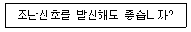
- May I transmit the distress signal?
- Can I transmit the distress signals?
- Will you I transmit the distress signals?
- Shall I send the signal 'MAYDAY'?
(정답률: 알수없음)
22. 다음 중 용어의 관계가 잘못 쓰인 것은?
- 약어표 : list of abbreviations
- 선택호출번호 : selective call number
- 위도 및 경도 : latitude and longitude
- 사무총국장 : General Secretariat
(정답률: 알수없음)
23. 다음 문장 중 ( )안에 가장 알맞는 것은?
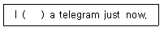
- send
- sent
- have sent
- sending
(정답률: 알수없음)
24. 다음 문장을 가장 옳게 영역한 것은?
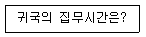
- What is the hours during which your station is opens?
- What are the hours during which your station is open?
- What is the hour during your station is opening?
- What are the hour your station opened?
(정답률: 알수없음)
25. What do you call the telecommunication by means of radio waves?
- Telecommunication
- Radiocommunication
- Wireless communication
- Multimedia communication
(정답률: 알수없음)
26. 다음 문장이 나타내는 가장 적합한 뜻은?
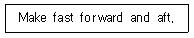
- 밧줄을 빨리 감아라.
- 앞뒤를 당겨라.
- 선수와 선미를 고박시켜라.
- 빨리 정지하라.
(정답률: 알수없음)
27. 아래 문장의 ( )에 가장 적합한 것은?
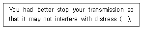
- frequency
- power
- strength
- traffic
(정답률: 알수없음)
28. 다음 문장을 가장 옳게 국역한 것은?
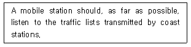
- 이동국은 해안국에서 전송되는 호출표를 청수하여야 한다.
- 이동국은 해안국에서 전송되는 호출표를 청수할 수 있어야 한다.
- 이동국은 해안국에서 전송되는 호출표를 가능한 한 청수할 수 있어야 한다.
- 이동국은 해안국에서 전송되는 호출표를 가능한 한 청수하여야 한다.
(정답률: 알수없음)
29. 다음 문장의 ( )에 가장 적합한 주파수는?
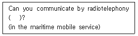
- 8364[MHz]
- 2182[MHz]
- 2091[MHz]
- 500[MHz]
(정답률: 알수없음)
30. 다음 문장의 밑줄친 부분의 영역으로 가장 적합한 것은?
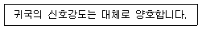
- bad
- fairly good
- excellent
- weak
(정답률: 알수없음)
31. 무선전화 통화에서 다음에 해당하는 약어는?
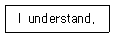
- Correction
- Roger
- Over
- Out
(정답률: 알수없음)
32. 다음 문장의 밑줄친 부분의 가장 적합한 용어표현은?
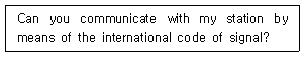
- 국제기호서식
- 국제신호서
- 국제통신양식
- 국제부호표
(정답률: 알수없음)
33. 다음 문장의 ( )안에 가장 적합한 것은?
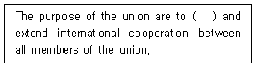
- accept
- raise
- promote
- maintain
(정답률: 알수없음)
34. 다음 문장의 ( )에 가장 알맞는 것은?
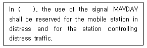
- radiotelegram
- radiotelephony
- radio
- radiotelegraphy
(정답률: 알수없음)
35. 다음 영문의 ( )안에 가장 적합한 단어는?
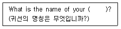
- harbor
- station
- vessel
- port
(정답률: 알수없음)
36. 다음 숫자를 통화표에 의하여 표시하고자 할 때 사용하는 약어는?
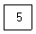
- FIVE
- FIVETH
- PANTAFIVE
- FIVETEEN
(정답률: 알수없음)
37. 다음을 전화 통신에서 한자씩 보낼 때 알맞는 알파벳 통화표 사용단어는?
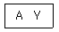
- ALABAMA YOKE
- ALFRED YELLOW
- AMERICA YORK
- ALFA YANKEE
(정답률: 알수없음)
38. 다음 문장의 ( ) 안에 적합한 것은?
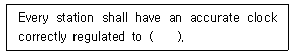
- UTC
- GMT
- ITU
- KMT
(정답률: 알수없음)
39. 알파벳 통화표의 발음에 대한 강세를 밑줄로 표시한 것 중 틀린 것은?
- J : JEW LEE ETT
- K : KEY LOH
- P : PAH PAH
- T : TANG GO
(정답률: 알수없음)
40. 다음 문장의 ( )에 적합한 것은?
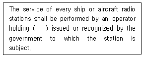
- a tester
- an engineer
- a certificate
- a grade
(정답률: 알수없음)
3과목: 임의 구분
41. VHF해안국의 무선전화 통신범위내의 해역은?
- A1해역
- A2해역
- A3해역
- A4해역
(정답률: 알수없음)
42. 다음 중 보안도가 가장 높은 통신수단은?
- 신호통신
- 우편통신
- 전령통신
- 전기통신
(정답률: 알수없음)
43. 선박이 조난 상태에서 수신 시설을 이용할 수 없을 때에 수색과 구조 작업 시 생존자의 위치 탐색을 용이하게 하도록 무선 표지 신호를 발신하는 장치는?
- 양방향 VHF 무선 전화 장치
- NAVTEX 수신기
- 자동 경보 발생 장치
- 비상 위치 지시용 무선 표지국
(정답률: 알수없음)
44. 전파법에 규정된 무선종사자의 정의는?
- 무선 설비를 조작하는 자
- 정보통신부장관으로부터 당해 기술자격 수첩을 받은 자
- 무선국의 통신조작 및 기술조작을 하는 면허를 가진 자
- 무선설비를 조작하거나 그 설비의 공사를 하는 자로서 기술자격수첩을 교부받은 자
(정답률: 알수없음)
45. 전파법에서 정의한「특정한 주파수의 용도를 정하는것에 해당되는 용어는?
- 주파수 분배
- 주파수 할당
- 주파수 지정
- 중간 주파수
(정답률: 알수없음)
46. 자재 보안이란 무엇인가?
- 통신소를 보호하는 것이다.
- 통신장비를 보호하는 것이다.
- 통신보안자료를 보호하는 것이다.
- 통신문서를 보호하는 것이다.
(정답률: 알수없음)
47. 송신보안에 해당하는 것은?
- 적의 도청 또는 교신분석에 대하여 보안을 유지하는 것
- 통신소에 경비원을 배치하는 것
- 암호나 음어가 누설되지 않도록 보안을 유지하는 것
- 비 인가자의 암호자재 취급을 제한하는 것
(정답률: 알수없음)
48. 수신설비가 갖추어야 될 조건에 해당되지 않는 것은?
- 증폭도가 클 것
- 내부 잡음이 적을 것
- 감도가 충분할 것
- 선택도가 클 것
(정답률: 알수없음)
49. 다음 중 전기통신연합의 법률문서에 해당되지 않는 것은?
- 국제전기통신연합헌장
- 국제전기통신연합협약
- 전파규칙
- 국제유선통신규칙
(정답률: 알수없음)
50. 통신정보에 해당되지 않는 것은?
- 통신정보는 보호기능이다.
- 통신정보는 공격수단이다.
- 통신정보는 음성적이다.
- 통신정보는 수집기능이다.
(정답률: 알수없음)
51. 다음 중 통신보안상 가장 취약한 주파수대는?
- 장파대
- 중파대
- 단파대
- 초단파대
(정답률: 알수없음)
52. 다음 중 전기통신연합의 목적에 해당되지 않는 것은?
- 세계 주민에게 새로운 전기통신기술의 이용확장 촉진
- 평화적 관계를 증진할 목적의 전기통신업무의 이용 촉진
- 전기통신의 개선과 합리적 이용을 위해 연합회원국간의 국제협력 유지 및 증진
- 전파통신업무를 위한 무선주파수 스펙트럼과 정지위성궤도의 사용을 제한
(정답률: 알수없음)
53. 통신보안 목적과 관계 없는 것은?
- 비밀내용을 도청·분석한다.
- 통신내용의 분석을 지연시킨다.
- 비밀의 누설가능성을 사전에 제거한다.
- 비밀내용의 취급을 최소한으로 국한한다.
(정답률: 알수없음)
54. 무선국 허가의 결격사유에 해당되지 않는 사항은?
- 대한민국이 국적이 없는 자
- 외국정부
- 외국의 법인
- 외국인으로 우리나라의 국적을 얻은 자
(정답률: 알수없음)
55. 다음 중 무선국 개설허가의 유효기간이 5년이 아닌 것은?
- 해안지구국
- 항공국
- 해안국
- 아마추어국
(정답률: 알수없음)
56. 다음 중 NAVTEX 수신기에 사용되는 주파수는 몇[kHz] 인가?
- 410
- 500
- 518
- 2187.5
(정답률: 알수없음)
57. 진폭변조 중 단측파대 억압반송파에 해당하는 기호는?
- R
- J
- H
- A
(정답률: 알수없음)
58. 다음중 국제 전기 통신 연합의 최고 기관은?
- 전권위원회의
- 사무국
- 전파통신총회
- 조정위원회
(정답률: 알수없음)
59. 제2침묵시간에 전파를 발사하지 못하는 주파수대는?
- 2173.5 - 2190.5[㎑]대
- 2375.3 - 2397.5[㎑]대
- 2565.5 - 2586.5[㎑]대
- 2847.5 - 2859.5[㎑]대
(정답률: 알수없음)
60. 중요 통신 내용이 누설되는 요인에 해당되지 않는 것은?
- 보고 체제의 다원화
- 비밀 내용의 평문 송신
- 비화기의 사용
- 취약성있는 통신망 이용
(정답률: 알수없음)